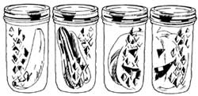
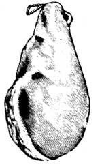
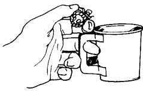

BITS AND PIECES
Nature's Skin Cream
I used to wash my hands frequently while preparing meals in the kitchen," writes Clay Kirkland of Denver Colorado. "Then one day I realized that a lot of the foods I was washing off my hands were common ingredients in skin cream ... such things as avocado, mayonnaise, and cooking oil. These days, I just massage these skin-friendly foods right into my hands. it saves time, skin cream, and water."
Canning Bread
And while we're in the kitchen, let's look at another handy food-related tip. This innovative baking method comes from Leona Burch of Lower Lake, California, and has to do with "bottle-bread."
"I bought three dozen straight-sided 1-1/2 pint jars to can specialty breads," Leona says. "I cook up a triple (or bigger) batch of zucchini, pumpkin, or banana bread: I butter the insides of the jars, being careful not to get any butter on the top inch of glass, and fill them half full of bread batter. Then I pop them-without lids-into the oven with my regular loaves, and bake them about 45 minutes. (If the jar-loaves are done, they'll have the texture of regular bread; if they're not quite done, they'll feel and taste like bread pudding.) Next, I remove each jar and screw a heated lid on tightly. The sealed bottle-bread will keep, without refrigeration, until I need it."
Hamming It Up
And our final bit of pantry wisdom was sent in by Princeton, West Virginia, reader Walter Elswick, who writes, "I love Carolina country-cured ham and don't hesitate to buy a large one ... because I've found a way to store the unused portion indefinitely, without refrigeration. It's easy-I just cover the carved-on portion of meat with melted paraffin wax, rub the hot sealant into any crevices in the ham with a piece of waxed paper, and then hang it up for storage. When I'm ready for more, I just remove the paraffin with a knife, exposing meat that's as fresh as the day I hung it. And the same wax can be remelted and used again."
Cinnamon-
Flavored Ants
Our first helpful household hint this issue comes from Connie Forand of Bellingham, Massachusetts. Connie has found a natural way to defend her home from ant attack. She says, "For years, I was greatly bothered by carpenter ants. Finally, I found a way to solve the problem-by sprinkling cinnamon under the sink, beneath bottom drawers, and behind the fridge and stove. Within 20 minutes the entire ant population had come out of hiding and was running around in the center of the kitchen, not knowing where to go, since I'd 'mined' the whole perimeter of the room! I resolved their dilemma by doing an improvised stomp-dance in their midst.
"I haven't seen an ant since then, and that was seven years ago. But to be sure, I sprinkle cinnamon around the foundation of my home each spring ... it really works, and can't harm children or pets."
Varnish-Saver
Graham Wright of Laguna Beach, California, wants to let other MOTHER-readers know about a way he's found to keep a can of wood stain or varnish from hardening after it's been opened. "It's the air trapped inside the can that causes a partly used container of stain or varnish to gel and eventually solidify," Graham says. "The solution to this wasteful problem is to displace that trapped air with clean, smooth, hard stones like the ones you can find in streambeds. just keep dropping in stones until the liquid comes up to the rim of the container, then replace the lid and you're guaranteed of having ready-touse stain or varnish next time you need it no matter how far into the future that might be."
Berry Picker's Delight
"Reading about Mr. Osborne's 'Strawberry Picker's Delight' in MOTHER NO. 86 reminded me of a method I devised years ago to harvest fruits from raspberry and blackberry bushes," writes Ronald Peyton of Ellensburg, Washington. "Just pick up a package of the old-style paper hot-drink cups (with the two fold-out handles) at your neighborhood grocery store, and head for the berry patch.
When you're ready to pick, just fold out the handles on a couple of the cups, and slip the middle finger of each hand through the paper loops (as shown in the drawing). This leaves your thumbs and forefingers free to pick the berries and drop them into the cups.
"This method of harvesting has proved to be much faster and less wasteful (fewer berries lost) than the old 'freehand' style. It's also less painful, since I can pick two cups of berries without having to withdraw my hands from the thorny bushes, thereby cutting down on stings, pricks, and scratches."
Through the years we've all probably discovered a few practical, down-home, timetested solutions to the frustrating little problems of everyday life. Why not share your best "horse sense" with the rest of MOTHER's readers? Send your suggestions to Country Lore, THE Mother Earth News", 105 Stoney Mountain Rd., Hendersonville, NC 28791. A one-year subscription-or a one year extension of an existing subscription-will then be sent to each contributor whose tip is printed in this column-MOTHER.
De-Ringworming Cats
"When ringworm (a highly infectious fungus that has nothing to do with worms) attacked five of my feline friends, I found out just how difficult this menace can be to eradicate," writes Raymond Downs, a MOTHER-reader hailing from Reidsville, Georgia. "After a while, it even made my cats' hair fall out in patches, so they looked as if they had mange. I couldn't afford to take all five pets to the vet, so I consulted an old country cousin, who suggested that I bathe the critters, then dip them in a chlorine bleach solution (one part bleach to ten parts water).
"I tried the bleach-dip trick twice on each cat over a two-week period, being careful to avoid getting any of the liquid in their eyes. That was more than a month ago. The ringworm is now long gone, my cats' hair has grown back to cover the previously infected areas ... and the total cost to treat and cure all five cats was less than a dollar!"
Planting Bones
Dian Zwerink of Moore, Montana, has a hint to help us bone up on our houseplanting skills. "When repotting houseplants," Dian says, (simply toss a few hard bone pieces into the bottom of the pot along with the drainage rocks. (Old, dog-chewed ones are the very best.) Not only do the bones, along with the rocks, help to keep your plants' roots from becoming waterlogged, they also provide calcium and other minerals."
Quick-Tanning
Rabbit Skins
"I've been raising rabbits for a few years now," writes Angie Ronald of Coeur d'Alene, Idaho, "and last year a friend taught me an easy and inexpensive way to help speed the tanning process. After you wash and gently blot dry a fresh pelt, turn it skin side up and pour a thin layer of vinegar over any tissue still clinging to the hide. (The cheapest vinegar you can find is good enough for this job.) Use your fingers to rub the vinegar into the hide, then roll it up and put it into a plastic bag. After three to five hours (depending on the amount of tissue on the hide), the remaining fat and meat will come off the skin easily ... and you can go on to your acid or alum tanning process.
"This method will cut in half the time your hides need to stay in the tanning solution. It's worked for me every time, and it's nice to have my rabbit pelts done in a fraction of the time it used to take."
|
|
 |
 |
|
|
 |
|